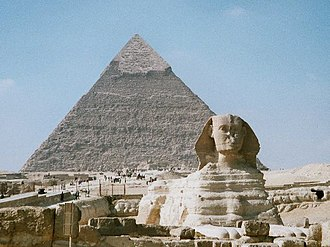
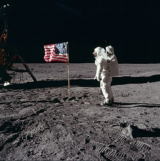
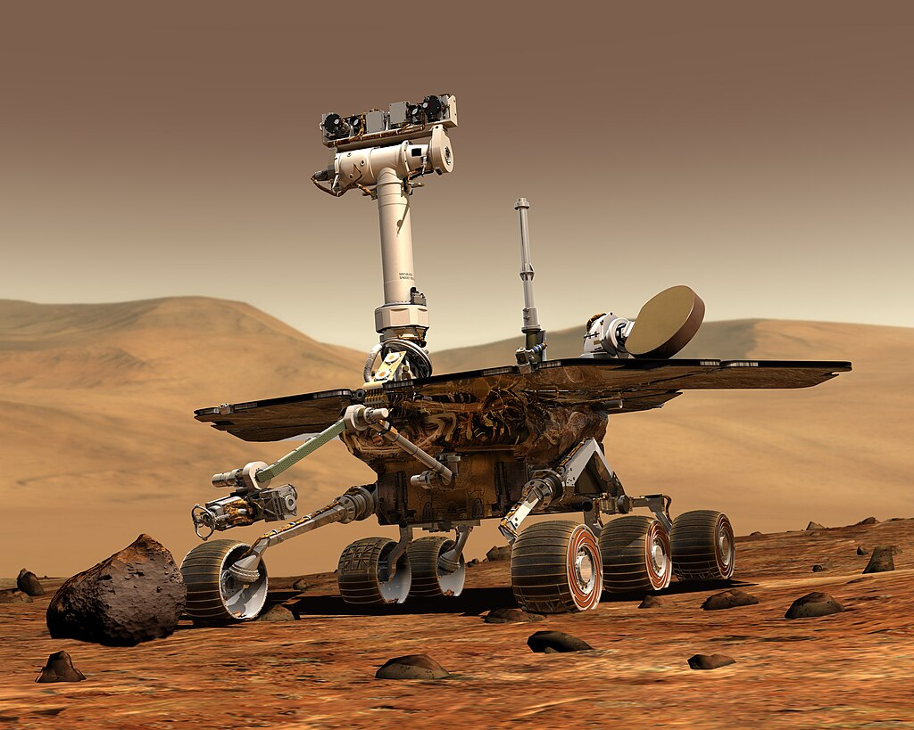

Sejarah Perkembangan Teknologi
Metode Metode rekonstruksi perkembangan teknologi manusia
Lewis H. Morgan berpendapat bahwa perkembangan teknologi merupakan faktor utama dalam perkembangan peradaban manusia. Dengan demikian, rekonstruksi sejarah dan perkembangan teknologi manusia dapat dilakukan melalui poros waktu perkembangan peradaban manusia itu sendiri. Garis waktu dapat dibagi menjadi beberapa bagian, yang kemudian dikaitkan dengan teknologi atau perangkat baru yang ada pada saat itu.

Selain itu, peningkatan produktivitas ekonomi menunjukkan adanya teknologi atau peralatan baru dalam suatu peradaban, sehingga data historis peningkatan produktivitas ekonomi dapat dikorelasikan dengan penemuan alat atau teknologi baru.
-
01 Zaman batu
Alat atau perlengkapan yang digunakan manusia saat ini juga terbatas untuk mendukung kegiatan tersebut. Sebagian besar perkakas pada masa itu terbuat dari batu dan tulang, dan setiap perkakas memiliki kegunaan tertentu, seperti menebang pohon, berburu, menguliti hewan, dan sebagainya.
-
02 Zaman perunggu
Benda-benda yang dihasilkan pada zaman ini seperti kapak corong, pedang, nekara dan lain-lain. Selain menekankan pada pemanfaatan logam, pada awal zaman perunggu manusia telah mengenal roda, yang menunjang aktivitas ekonomi secara signifikan. Di Indonesia, perkakas yang merupakan peninggalan zaman perunggu diantaranya: kapak corong, nekara, arca, bejana perunggu dan lain sebagainya.
-
03 Zaman besi
pada zaman besi serupa dengan zaman perunggu. Hanya saja perkakas yang digunakan lebih kuat karena menggunakan besi. Besi merupakan material yang lebih keras daripada perunggu dan juga lebih melimpah persebarannya. Artefak paling awal terbuat dari besi ditemukan di Gerzeh, Mesir yang berupa sembilan buah manik-manik yang merujuk pada tahun 3200 sebelum masehi.

Teknologi zaman kuno
Teknologi pada peradaban Mesir kuno
Peradaban Mesir kuno juga memberikan kontribusi besar bagi perkembangan teknologi bahari seperti pembuatan kapal dan mercusuar. Selain itu, banyak bangunan monumental yang didirikan saat ini, seperti Piramida, Perpustakaan Aleksandria, Patung Sphinx, dan Mercusuar Aleksandria. Hal ini menunjukkan bahwa peradaban Mesir kuno merupakan peradaban yang sangat kompleks pada masa itu. Irigasi untuk keperluan pertanian juga sangat berkembang pada masa peradaban Mesir kuno.
Perkembangan teknologi pada peradaban Yunani Kuno
Peradaban Yunani kuno terkenal oleh ilmuwan seperti Archimides dan Heron. Archimides menemukan metode infinitdesimal untuk menghitung luas lingkaran sekaligus dan metode memperoleh nilai pi dengan akurasi yang tinggi.Teknologi abad pertengahan hingga awal era modern
Perkembangan teknologi peradaban Islam
Di bidang astronomi, para ilmuwan pada masa peradaban Islam menciptakan kalender atau tabel yang akurat untuk memprediksi fenomena astronomi seperti gerhana matahari dan pergerakan planet.
Perkembangan teknologi pada abad pertengahan eropa
Teknologi abad pertengahan banyak dikaitkan dengan kepentingan militer, seperti zirah lempeng, busur silang dan meriam.
Perkembangan teknologi pada masa Renaisans
Salah satu penemuan Gutenberg yang luar biasa adalah mesin cetak, yang dianggap sebagai salah satu penemuan terpenting dalam peradaban manusia.
Perkembangan teknologi pada zaman penjelajahan
Banyak penemuan dan teknologi yang berkembang di era ini terkait dengan minat ini. Kartografi, navigasi, dan pembuatan kapal menjadi fokus utama saat ini.
Perkembangan teknologi pada revolusi industri
Revolusi Industri adalah periode perubahan sosial, ekonomi, dan teknologi yang besar yang terjadi pada akhir abad ke-18 dan awal abad ke-19. Era ini ditandai dengan diperkenalkannya mesin dan teknologi baru, seperti mesin uap, yang memungkinkan produksi massal yang efisien dan mengubah semua metode produksi manusia, dari tekstil menjadi transportasi.
Revolusi Industri Era 1.0 sampai 4.0
-
01 Revolusi Industri
Revolusi Industri 1.0 adalah era yang terjadi pada abad ke-18 (1760–1840). Pada kisaran tahun tersebut, penemuan mesin uap oleh James Watt merupakan awal terjadinya era ini di tanah Inggris sehingga membawa perubahan besar di berbagai sektor. penemuan di era revolusi industri 1.0 :
Mesin Uap, Kereta Uap, Sistem Produksi Skala Besar -
02 Revolusi Industri
Revolusi Industri 2.0 adalah era revolusi yang terjadi sekitar awal abad ke-19 (1870-an) dan berfokus kepada efisiensi mesin di setiap lini (Assembly Line) dalam proses produksi karena ditemukannya tenaga listrik. penemuan di era revolusi industri 2.0 :
Penemuan Arus Listrik AC & DC, Alat Telekomunnikasi, Proses Produksi Massal -
03 Revolusi Industri
Revolusi Industri 3.0 adalah era yang terjadi sekitar awal abad ke-20 (1970-an) dan dipicu oleh perkembangan mesin-mesin pintar (Komputer & Software) berbasis teknologi otomatisasi yang perlahan menggantikan peran-peran manusia di lapangan. Pada era inilah dimulainya digitalisasi khususnya di dunia industri. penemuan di era revolusi industri 3.0 : Teknologi Komputer, Teknologi Internet, Perangkat Elektronik dan Perangkat Lunak (Software)
-
04 Revolusi Industri
Revolusi Industri 4.0 adalah era yang saat ini kita jalani di mana pengembangan teknologi lebih lanjut seperti internet berkecepatan tinggi, komputerisasi, microchip, IoT, kecerdasan buatan (AI), machine learning, deep learning, cloud analytics, bahkan kendaraan otonom yang merevolusi setiap proses mulai dari produksi hingga distribusi dan berfokus kepada keberlanjutan (Sustainability). penemuan di era revolusi industri 4.0 : Big Data, Internet of Things (IoT) dan Industrial Internet of Things (IIoT), Cloud Computing, Artificial Intelligence (AI) dan masih banyak lagi.
Perkembangan teknologi pada Abad 20 dan abad ke 21
-
Abad ke-20
Di akhir abad ke-20 internet mulai diperkenalkan untuk kepentingan sipil dan komersial, arus informasi pun bertukar dengan sangat cepat apalagi setelah diperkenalkannya telepon genggam. Selain itu pada abad 20 merupakan masa dimulainya inovasi terhadap peralatan rumah tangga seperti kulkas, pembersih vakum, dan microwave.
 -
Abad ke-21
Bidang penelitian populer pada abad-21 atau saat ini diantaranya, komputer kuantum, terapi gen, teknologi nuklir, teknik material, kecerdasan buatan, dan energi terbarukan, pada Abad ke-21 juga di sebut abad digital masifnya digitalisasi disegala bidang
 -
Daftar Pustaka
https://sasanadigital.com/mengintip-perkembangan-revolusi-industri-mulai-era-1-0-sampai-4-0/ https://id.wikipedia.org/wiki/Sejarah_teknologi https://p2k.stekom.ac.id/ensiklopedia/Sejarah_teknologi